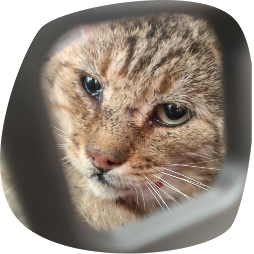

Qui sommes-nous ?

Pas à Pattes
Association loi 1901 de protection animale, reconnue d’intérêt général, qui a pour but de sauver des animaux et sensibiliser à la cause animale en général.

Nous recueillons les animaux abandonnés, maltraités ou errants

Nous les plaçons dans une famille d’accueil adaptée à l’animal afin de lui prodiguer tous les soins nécessaires à son rétablissement.

Nous leur trouvons une nouvelle famille pour la vie.

6 ans
D'existence

110 235
Animaux sauvés
48
Bénévoles